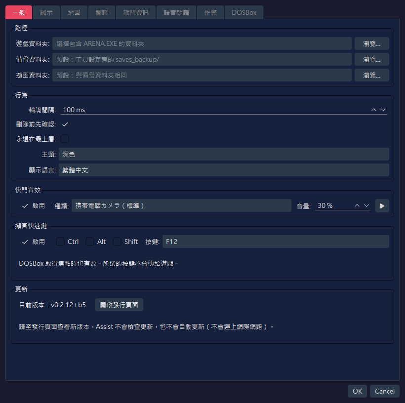
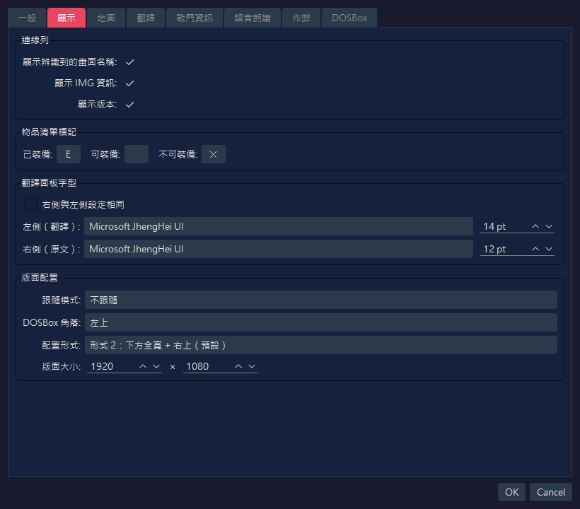
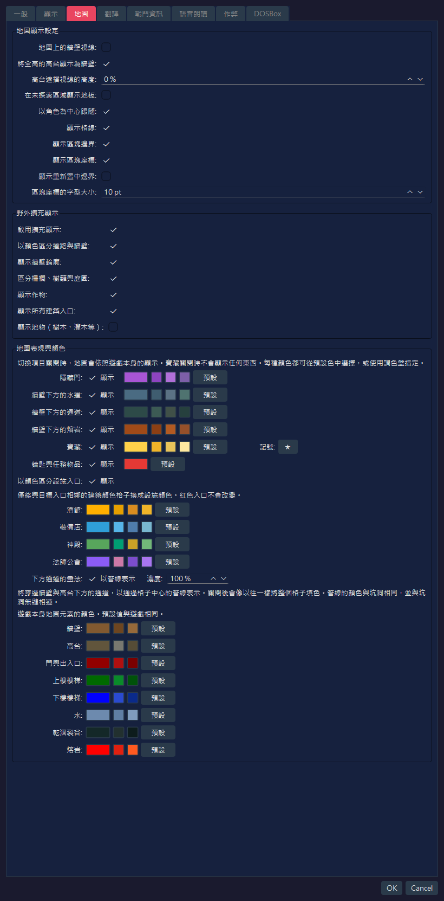
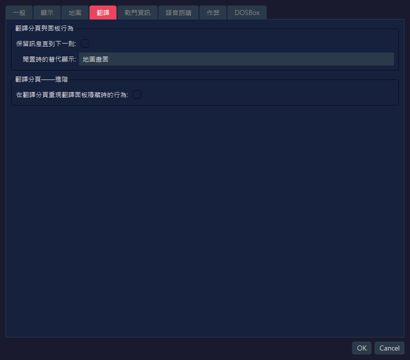
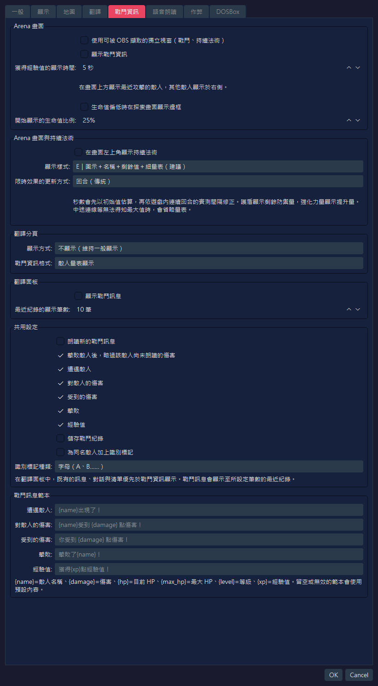
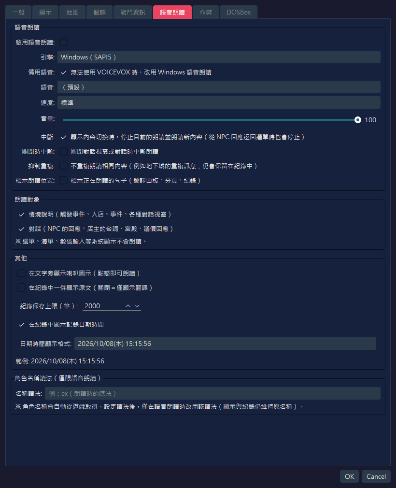
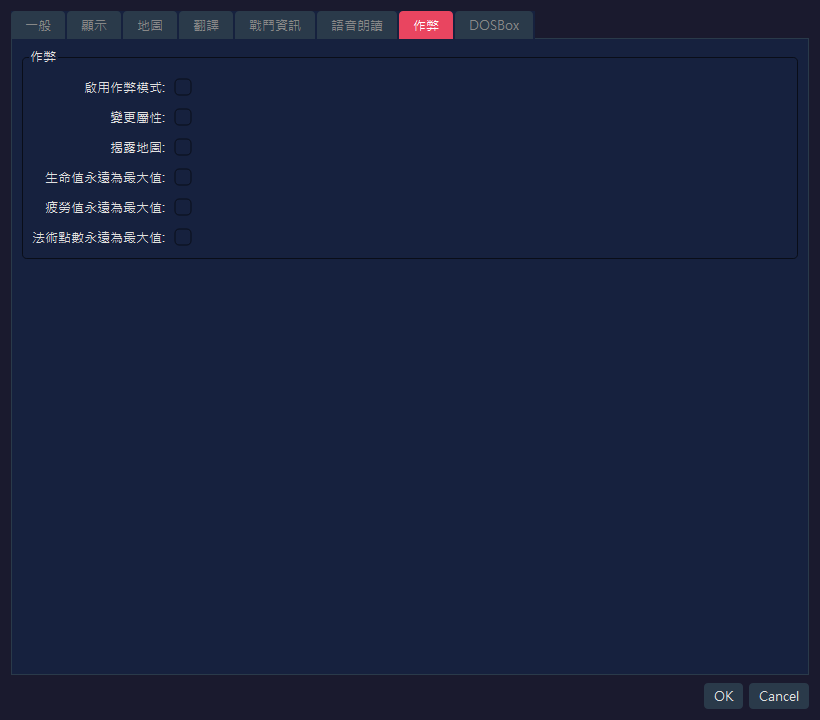
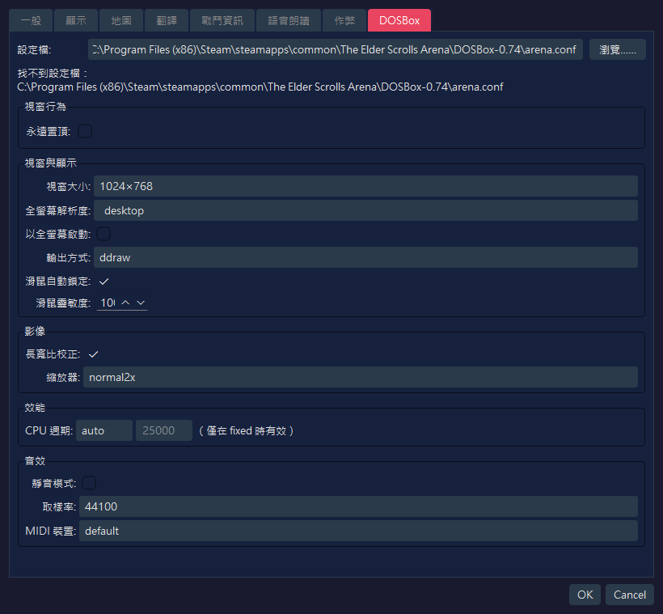

本頁展示 RTESArenaAssist 設定對話方塊各分頁的擷圖，並說明每個介面元素。
圖片是以你的顯示語言、預設設定與預設的「深色」主題，拍攝設定對話方塊所得。
「DOSBox」分頁中的數值，不僅反映 Assist 自己的設定檔，也包含從預設路徑下的 arena.conf 讀取到的內容。若你環境中的 arena.conf 不同，顯示的數值也會不同。
此分頁用於設定路徑、基本行為、快門音效與擷圖快速鍵，也可以查看你目前使用的版本。

| 名稱 | 預設值 | 說明 |
|---|---|---|
遊戲資料夾： | 空白 | 包含 Arena 的 ARENA.EXE 與存檔檔案的資料夾。未設定時，無法使用存檔管理與讀取遊戲資料 |
備份資料夾： | 空白 | 存放存檔備份的位置。留空時，使用工具設定檔旁的 saves_backup/ |
擷圖資料夾： | 空白 | 儲存擷圖的位置。留空時，使用與備份資料夾相同的資料夾 |
瀏覽…… | - | 選擇各個資料夾 |
| 名稱 | 預設值 | 說明 |
|---|---|---|
輪詢間隔： | 100 ms | 檢查 DOSBox 畫面與記憶體狀態的頻率。預設值較短，以便更容易捕捉到簡短的訊息 |
刪除前先確認： | 開啟 | 刪除擷圖或備份時，顯示確認對話方塊 |
永遠在最上層： | 關閉 | 將 Assist 的主視窗顯示在其他視窗的前面 |
主題： | 深色 | 選擇介面的配色主題 |
顯示語言： | 自動（系統語言） | 介面語言。留空時會依系統語言自動偵測，變更後須重新啟動應用程式才會生效 |
| 名稱 | 預設值 | 說明 |
|---|---|---|
啟用 | 開啟 | 儲存擷圖時播放音效 |
種類： | 携帯電話カメラ（標準）（手機相機，標準） | 播放的快門音效。可從標準、短版、雙響、強化高音與柔和中選擇 |
音量： | 30 % | 快門音效的播放音量 |
▶ | - | 試聽所選的快門音效 |
在遊戲畫面（DOSBox）保持焦點的狀態下，只要按一個鍵就能儲存擷圖。可用來擷取幾秒後就會消失的訊息。
| 項目 | 預設值 | 說明 |
|---|---|---|
啟用 | 開啟 | 使用擷圖快速鍵 |
Ctrl / Alt / Shift | 關閉 | 開啟後可組合修飾鍵 |
按鍵： | F12 | 使用的按鍵。可從 F5 到 F12、PrintScreen、Pause、ScrollLock、Insert、Home、End、PageUp 與 PageDown 中選擇 |
| 名稱 | 預設值 | 說明 |
|---|---|---|
目前版本： | - | 你正在使用的 Assist 版本 |
開啟發行頁面 | - | 在瀏覽器中開啟 Assist 的發行頁面（Releases 清單）。可在此確認是否有較新的版本 |
Assist 不會連上網際網路，因此不會檢查更新，也不會自動更新。
此分頁用於設定連線列、物品清單中的裝備標記、翻譯面板字型與版面配置。

| 名稱 | 預設值 | 說明 |
|---|---|---|
顯示辨識到的畫面名稱： | 開啟 | 在連線列顯示目前辨識到的畫面名稱 |
顯示 IMG 資訊： | 開啟 | 在連線列顯示正在偵測的 IMG 資訊 |
顯示版本： | 開啟 | 在連線列與狀態列顯示應用程式版本 |
| 名稱 | 預設值 | 說明 |
|---|---|---|
已裝備： | E | 顯示在已裝備物品最左端的單一字元標記 |
可裝備： | 空白 | 可裝備物品的標記。預設為空白，因此不顯示任何內容 |
不可裝備： | ✕ | 顯示在無法裝備的物品最左端的單一字元標記 |
| 名稱 | 預設值 | 說明 |
|---|---|---|
右側與左側設定相同 | 關閉 | 開啟後，原文一側的字型與大小會和翻譯一側一致 |
左側（翻譯）： | 應用程式預設 / 14 pt | 用於翻譯文字的字型與大小。若尚未儲存字型名稱，則會選用應用程式在你的環境下的預設字型 |
右側（原文）： | 應用程式預設 / 12 pt | 用於英文原文的字型與大小。由於「右側與左側設定相同」為關閉，因此可與翻譯一側分開設定 |
| 名稱 | 預設值 | 說明 |
|---|---|---|
跟隨模式： | 不跟隨 | 選擇移動 DOSBox 或 Assist 其中之一時，另一個是否跟著移動 |
DOSBox 角落： | 左上 | 一鍵配置與版面模式下，放置 DOSBox 的螢幕基準角落 |
配置形式： | 形式 2：下方全寬 + 右上（預設） | DOSBox 與 Assist 各面板之間的區域劃分方式。形式 2 是使用右上與下方全寬區域的標準配置 |
版面大小： | 1920 x 1080 | 版面模式下整個畫布的大小 |
此分頁用於設定探索地圖與野外擴充顯示。

| 名稱 | 預設值 | 說明 |
|---|---|---|
地圖上的牆壁視線： | 關閉 | 關閉時，牆壁後方尚未探索的區域不會記錄到地圖上。開啟後更接近 Arena 原作，透過牆壁看到的區域也會被記錄 |
將全高的高台顯示為牆壁： | 開啟 | 將從地面到天花板填滿的高台，以牆壁的顏色顯示。只有顯示時的分類會改變，不影響視線的遮擋方式。未達全高的高台仍會顯示為高台 |
高台遮擋視線的高度： | 0 % | 以天花板高度為 100%，頂端達到此高度以上的高台會遮擋地圖上的視線。設為 0% 時，所有高台都會遮擋視線 |
在未探索區域顯示地板： | 關閉 | 關閉時，只有已探索的格子會顯示地板顏色，因此看不出未探索區域的形狀。開啟時，整張地圖都會以羊皮紙色顯示 |
以角色為中心跟隨： | 開啟 | 角色移動時，地圖會自動跟隨角色。角色停止時，你可以手動平移 |
顯示格線： | 開啟 | 在格子的邊界顯示格線 |
顯示區塊邊界： | 開啟 | 在野外地圖上強調區塊的邊界（以 64 格為單位） |
顯示區塊座標： | 開啟 | 在野外地圖上顯示每個區塊的座標，幫助你掌握所在位置 |
顯示重新置中邊界： | 關閉 | 以虛線顯示野外地圖的重新置中邊界。這是用於調查或確認位置的輔助顯示 |
區塊座標的字型大小： | 10 pt | 區塊座標標籤的文字大小 |
| 名稱 | 預設值 | 說明 |
|---|---|---|
啟用擴充顯示： | 開啟 | 野外地圖擴充顯示的總開關。關閉時，顯示與遊戲內的自動地圖相近 |
以顏色區分道路與牆壁： | 開啟 | 以不同顏色繪製可通行的道路，以及建築、牆壁等無法通行的部分 |
顯示牆壁輪廓： | 開啟 | 顯示牆壁與邊緣地形的輪廓 |
區分柵欄、樹籬與庭園： | 開啟 | 以連線區分柵欄、樹籬、庭園等邊緣地形 |
顯示作物： | 開啟 | 以專用的顏色或記號顯示玉米、農田等作物 |
顯示所有建築入口： | 開啟 | 同時以紅色顯示民宅、酒館、神殿、城門等的入口。墓穴、塔與地下城的入口，不論此設定為何都以紅色顯示 |
顯示地物（樹木、灌木等）： | 關閉 | 疊加顯示樹木、灌木、岩石、墳墓、廢墟等的簡化記號。它們數量眾多，會讓地圖難以閱讀，所以預設為關閉 |
遊戲本身的地圖會把牆壁下方的通道等內容不加區分地繪製。在這裡你可以設定是否區分繪製，以及各元素的顏色。若在某一列關閉「顯示」，該元素就會恢復為與遊戲地圖相同的顯示（關閉「寶藏」則不顯示任何東西）。
| 名稱 | 預設值 | 說明 |
|---|---|---|
隱藏門： | 開啟 | 以專用顏色顯示已發現的隱藏門。在發現之前仍然是牆壁 |
牆壁下方的水道： | 開啟 | 以專用顏色顯示穿過牆壁下方的水道。在你實際從該處通過並將其揭露之前不會顯示 |
牆壁下方的通道： | 開啟 | 顯示穿過牆壁下方的通道。在你實際從該處通過並將其揭露之前不會顯示 |
牆壁下方的熔岩： | 開啟 | 以專用顏色顯示穿過牆壁下方的熔岩。在你實際從該處通過並將其揭露之前不會顯示 |
寶藏： | 開啟 | 在你取得寶藏的位置疊加顯示記號。記號的字元可在右側的欄位中變更。當作弊分頁中的「揭露地圖」為開啟時，不論你是否取得過，所有有寶藏的地方都會顯示 |
鑰匙與任務物品： | 開啟 | 在寶藏之中，以不同顏色顯示鑰匙與任務物品的記號。關閉時，它們與寶藏使用相同的顏色。「寶藏」為關閉時不會顯示 |
以顏色區分設施入口： | 開啟 | 在城市地圖上，將與酒館、裝備店、神殿或法師公會入口相鄰、帶有建築顏色的格子，換成各設施專用的顏色。紅色入口的顏色不會改變。各設施的顏色可在下方的欄位中變更 |
下方通道的畫法： | 以管線表示 / 濃度 100 % | 將穿過牆壁與高台下方的通道，以通過格子中心的管線表示。關閉時，仍像以往一樣將整個格子填色。管線的顏色與坑洞相同，並與坑洞無縫相連。調低濃度可讓管線更不顯眼 |
按一下各項目右側的色塊，可選擇任意顏色。旁邊的小按鈕是方便選擇的建議顏色，預設按鈕則用來恢復為原本的顏色。遊戲本身元素的顏色也可用同樣的方式變更：牆壁、高台、門與出入口、樓梯（上樓與下樓）、水、乾涸裂谷與熔岩（預設值與遊戲中的顏色相同）。
此分頁用於設定翻譯面板與翻譯分頁的輔助顯示。

| 名稱 | 預設值 | 說明 |
|---|---|---|
保留訊息直到下一則： | 關閉 | 指定觸發事件與物件互動的訊息，是否一直保留在翻譯面板中，直到下一則訊息出現 |
閒置時的替代顯示： | 地圖畫面 | 選擇探索中沒有翻譯內容時，翻譯分頁整體要顯示什麼。預設以地圖畫面為優先 |
| 名稱 | 預設值 | 說明 |
|---|---|---|
在翻譯分頁重現翻譯面板隱藏時的行為： | 關閉 | 開啟後，翻譯結果與對話訊息會顯示在翻譯分頁中，與翻譯面板隱藏時相同。這是用於驗證的進階設定 |
可以把內建譯文的一部分換成你自己的譯文，也可以新增語言。
匯出範本 中選擇語言（要建立新語言時，選擇 （新語言的空白範本）），按 匯出... 儲存 JSON 檔。開啟 附上英文原文 後會附上英文原文（遊戲正文的原文，只在已設定遊戲資料夾並已建立辭典的環境中附上）。請儲存在翻譯資料夾（見下）之外。text。text 為空的項目沿用內建譯文（新語言則沿用 meta.fallback 指定語言的譯文）。請不要更動鍵，以及 %xx、{name} 這類替換項（含有基準譯文沒有的替換項，或含有 <、> 的項目不會被載入）。source（英文原文）和 ref（供參考的譯文）在載入時不會被使用。lang（語言代碼，例如 tr）和 meta.display_name（顯示在語言清單中的名稱）。meta.fallback 是未翻譯項目所用的內建語言（預設為 en）；把 meta.direction 設為 rtl 即由右向左顯示。匯入翻譯檔 中按 匯入...，選擇編輯好的檔案。通過檢查後即匯入。新語言會出現在「全般」分頁的顯示語言中。重新啟動應用程式後生效。內建語言的範本中，每個項目都帶有目前的譯文。不修改的項目請整條刪除，或讓 text 留空。保留下來的項目會固定為你的譯文，應用程式更新後內建譯文的改進不會反映到這些項目。
範例 1：只修改內建德語譯文中的一個項目（只有你寫出的項目會被取代）。
{
"schema": "rtesaa.user_translation",
"schema_version": 1,
"lang": "de",
"texts": {
"ui_app": {
"settings.title": "Meine Einstellungen"
}
}
} |
範例 2：新語言（土耳其語）。ref 僅供參考，載入時不會被使用。
{
"schema": "rtesaa.user_translation",
"schema_version": 1,
"lang": "tr",
"meta": { "display_name": "Türkçe", "fallback": "en", "direction": "ltr" },
"texts": {
"ui_app": {
"settings.title": { "ref": "Settings", "text": "Ayarlar" }
}
}
} |
匯入的檔案會出現在 已匯入 清單中。選取後按 刪除 即可恢復為內建譯文（新語言會被移除）。開啟資料夾 會開啟與設定檔同一位置的 translations 資料夾。放在這裡的 JSON 會在啟動時自動載入。對於新增的語言，手冊等文件以英文顯示。
你可以分別設定戰鬥與持續法術的顯示位置。新增的顯示、朗讀與儲存功能預設皆為關閉。先前開發版本所儲存的設定值會原樣沿用。顯示的文字提供日文、英文、西班牙文、德文、法文、義大利文與俄文版本。

| 項目 | 預設值 | 說明 |
|---|---|---|
使用可被 OBS 擷取的獨立視窗（戰鬥、持續法術） | 關閉 | 將戰鬥資訊與持續法術集中到一個視窗，你可以用 OBS 的視窗擷取來選取它 |
顯示戰鬥資訊 | 關閉 | 在畫面上方顯示你最近交手過、已遭遇且目前在視野內的敵人，並在右側顯示其他已遭遇的存活敵人（即使不在視野內）。你可以查看生命值、疲勞、法術點數，以及造成的傷害與擊敗情況。你受到的傷害會顯示在探索區域的下緣 |
獲得經驗值的顯示時間： | 5 秒 | 在獲得經驗值的瞬間，於右下角顯示經驗值，並在指定的秒數後移除各個框。連續獲得更多時，較早的框會向左移動（1 到 60 秒） |
生命值偏低時在探索畫面顯示邊框 | 關閉 | 當生命值降到指定的比例以下時，讓探索畫面的邊緣微微閃爍。即使你不使用戰鬥資訊的敵人顯示，也可以啟用 |
開始顯示的生命值比例： | 25% | 開始顯示低生命值邊框的比例（最大生命值的 1 到 99%） |
受到傷害的顯示會在發生後約 5 秒自動消失。任何地點的敵人視野都採用相同的規則。當地圖或座標無法確定時，不會憑猜測顯示敵人。
若要用 OBS 錄製，請開啟此設定，然後在「視窗擷取」中選擇 RTESArenaAssist オーバーレイ（視窗標題在所有語言中都以日文顯示），允許透明，並疊加在遊戲影像之上。戰鬥資訊與持續法術會出現在同一個來源中。
| 項目 | 預設值 | 說明 |
|---|---|---|
在畫面左上角顯示持續法術 | 關閉 | 顯示光亮術、護盾、強化力量、火焰抗性與漂浮術的狀態 |
顯示樣式： | E｜圖示＋名稱＋剩餘值＋細量表（建議） | 可從 A「名稱＋剩餘值」、B「名稱＋橫向量表」、C「圖示＋橫向量表」、D「圖示＋順時針變暗」、E「圖示＋名稱＋剩餘值＋細量表」與 F「小型標籤」中選擇 |
限時效果的更新方式： | 回合（傳統） | 選擇光亮術、火焰抗性與漂浮術要以回合更新，還是以估算的秒數每秒更新一次。秒數會依遊戲內的進行間隔修正，因此當進行速度改變時（例如使用 DETAIL），不一定是固定的倍數 |
護盾顯示剩餘的防禦量，強化力量顯示提升的數值。當無法確認最大值時（例如中途連線），可能不會顯示量表。秒數顯示是估算值，效果何時結束以遊戲中的狀態為準。
| 項目 | 預設值 | 說明 |
|---|---|---|
顯示方式： | 不顯示（維持一般顯示） | 可選擇維持一般顯示、將一般顯示與戰鬥資訊並用，或全面顯示戰鬥資訊 |
戰鬥資訊格式： | 敵人量表顯示 | 顯示戰鬥資訊時，選擇文字或敵人量表顯示 |
| 項目 | 預設值 | 說明 |
|---|---|---|
顯示戰鬥訊息 | 關閉 | 在翻譯面板中顯示戰鬥文字。當出現既有的訊息、對話或清單時，以它們為優先 |
最近紀錄的顯示筆數： | 10 筆 | 顯示最近的 1 到 50 行戰鬥內容。超過數量時，會刪除最舊的行並加入新的行 |
| 項目 | 預設值 | 說明 |
|---|---|---|
朗讀新的戰鬥訊息 | 關閉 | 在整體啟用語音朗讀時，依發生順序朗讀新的戰鬥內容。不會排除最近出現過的相同內容，下一次傷害也不會打斷上一則朗讀 |
擊敗敵人後，略過該敵人尚未朗讀的傷害 | 開啟 | 擊敗敵人時，中斷正在播放的、對該敵人造成與受到的傷害，以及尚未朗讀的部分。其他敵人的朗讀會繼續 |
儲存戰鬥紀錄 | 關閉 | 將戰鬥歷程與一般記錄分開儲存。只有在有紀錄時，記錄分頁才會顯示切換項目 |
為同名敵人加上識別標記 | 關閉 | 僅在有多個同名敵人時，於名稱後加上用來區分的符號 |
識別標記種類： | 字母（A、B……） | 可選擇 A、B…… 或 1、2…… |
戰鬥訊息範本 | 各語言的預設文字 | 編輯遭遇敵人、對敵人的傷害、受到的傷害、擊敗與經驗值的文字。留空的欄位以及無法使用的預留位置，會恢復為預設文字 |
此分頁用於設定翻譯文字的朗讀、朗讀對象、記錄顯示與角色名稱的讀法。

| 名稱 | 預設值 | 說明 |
|---|---|---|
啟用語音朗讀： | 關閉 | 啟用朗讀翻譯文字的整體功能 |
引擎： | Windows（SAPI5） | 選擇朗讀引擎。當本機的 VOICEVOX 引擎正在執行時，可以選擇 VOICEVOX |
備用語音： | 開啟 | 選擇了 VOICEVOX 卻無法使用時，改用 Windows 語音朗讀未能朗讀的句子。關閉時，這些句子不會被朗讀 |
語音： | （預設） | 引擎為 Windows（SAPI5）時顯示。要使用的 SAPI 語音。選擇「（預設）」時，使用作業系統的預設語音 |
角色： | 風格 ID 0 的角色 | 引擎為 VOICEVOX 時顯示。用於朗讀的 VOICEVOX 角色 |
風格： | 風格 ID 0 | 引擎為 VOICEVOX 時顯示。所選角色的語音風格 |
🔊 試聽 | - | 引擎為 VOICEVOX 時顯示。以所選的角色與風格試讀一句短句 |
速度： | 標準 | 朗讀速度 |
音量： | 100 | 朗讀音量。請在 0 到 100 的範圍內設定 |
中斷： | 開啟 | 顯示內容切換時，停止先前的朗讀並朗讀新內容。從 NPC 的回應返回選單時也會停止 |
關閉時中斷： | 關閉 | 關閉對話視窗或對話時，停止正在進行的朗讀 |
抑制重複： | 關閉 | 不重複朗讀相同的內容（例如反覆出現的地下城訊息）。這些內容仍會保留在記錄中 |
標示朗讀位置： | 關閉 | 為正在朗讀的句子上色（翻譯面板、翻譯分頁、記錄） |
找不到 VOICEVOX 時，會顯示「啟動 VOICEVOX 後即可選擇（127.0.0.1:50021）。」。啟動 VOICEVOX 並重新開啟設定對話方塊後，你就可以選擇角色與風格。
| 名稱 | 預設值 | 說明 |
|---|---|---|
情境說明（觸發事件、入店、事件、各種對話視窗） | 開啟 | 將觸發事件、入店、事件與各種對話視窗等說明情境的文字，列為朗讀對象 |
對話（NPC 的回應、店主的台詞、宮殿、議價回應） | 開啟 | 將 NPC 的回應、店主的台詞、宮殿與議價回應等對話文字，列為朗讀對象 |
選單、清單與數值輸入等系統顯示不會朗讀。
| 名稱 | 預設值 | 說明 |
|---|---|---|
在文字旁顯示喇叭圖示（點擊即可朗讀） | 關閉 | 在顯示的文字旁顯示喇叭圖示，點擊即可朗讀 |
在紀錄中一併顯示原文（關閉＝僅顯示翻譯） | 關閉 | 在翻譯記錄中，將英文原文與翻譯並排顯示。關閉時只顯示翻譯 |
紀錄保存上限（筆）： | 2000 | 儲存的記錄筆數上限。超過的舊記錄會自動刪除 |
在紀錄中顯示記錄日期時間 | 開啟 | 在記錄項目上顯示記錄的日期與時間 |
日期時間顯示格式： | yyyy/MM/dd(aaa) HH:mm:ss | 記錄日期與時間的顯示格式。你可以選擇預設格式或自訂格式 |
| 名稱 | 預設值 | 說明 |
|---|---|---|
名稱讀法： | 空白 | 僅在朗讀時，將從遊戲自動取得的角色名稱換成你指定的讀法。顯示與記錄中仍保留原名稱 |
此分頁用於設定改寫遊戲內數值、永遠維持最大值等輔助功能。

| 名稱 | 預設值 | 說明 |
|---|---|---|
啟用作弊模式： | 關閉 | 整個作弊功能的總開關。即使只開啟它，若不開啟子設定，也不會有任何變化 |
變更屬性： | 關閉 | 允許編輯屬性等狀態變更 |
揭露地圖： | 關閉 | 作弊啟用期間，顯示整張地圖 |
生命值永遠為最大值： | 關閉 | 作弊啟用期間，若目前生命值低於最大值，就將其恢復為最大值 |
疲勞值永遠為最大值： | 關閉 | 作弊啟用期間，將目前疲勞值恢復為最大值 |
法術點數永遠為最大值： | 關閉 | 作弊啟用期間，將目前法術點數恢復為最大值 |
此分頁會讀取 DOSBox 的 arena.conf，並設定視窗顯示、影像、效能與音效。

| 名稱 | 預設值 | 說明 |
|---|---|---|
設定檔 | 預設路徑下的 arena.conf | DOSBox 的設定檔。當 Assist 自己的設定為空白時，會將 Arena Steam 版的標準位置當作預設路徑來讀取 |
瀏覽…… | - | 選擇任意的 arena.conf |
永遠置頂： | 關閉 | 將 DOSBox 視窗顯示在其他視窗的前面 |
| 名稱 | 預設值 | 說明 |
|---|---|---|
視窗大小： | 1024×768 | windowresolution。從預設值中選擇；選擇自訂時，編輯寬／高的數值欄位 |
全螢幕解析度： | desktop | fullresolution。指定全螢幕時使用的解析度 |
以全螢幕啟動： | 關閉 | fullscreen。指定 DOSBox 是否以全螢幕啟動 |
輸出方式： | ddraw | output。DOSBox 的繪製輸出方式 |
滑鼠自動鎖定： | 開啟 | autolock。自動將滑鼠鎖定在 DOSBox 畫面內 |
滑鼠靈敏度： | 100 | sensitivity。DOSBox 內的滑鼠靈敏度 |
| 名稱 | 預設值 | 說明 |
|---|---|---|
長寬比校正： | 開啟 | aspect。校正影像的長寬比 |
縮放器： | normal2x | scaler。DOSBox 的畫面放大濾鏡 |
| 名稱 | 預設值 | 說明 |
|---|---|---|
CPU 週期： | fixed 25000 | cycles。指定 CPU 模擬速度。選擇 fixed 時，右側的數值欄位會變為可用 |
| 名稱 | 預設值 | 說明 |
|---|---|---|
靜音模式： | 關閉 | nosound。停用 DOSBox 的聲音 |
取樣率： | 44100 | rate。混音器的取樣率 |
MIDI 裝置： | default | mididevice。用於 MIDI 播放的裝置 |